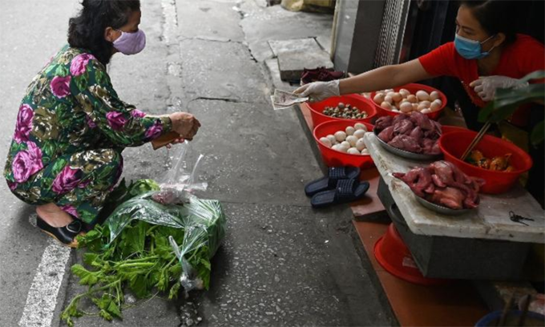

Hành động sớm, truy vết kỹ càng, tuyên truyền rộng rãi, là cách Việt Nam chống Covid-19 thành công theo nhận định của hãng tin Mỹ CNN.
"Khi cả thế giới nhìn sang châu Á để lấy ví dụ thành công trong công tác đối phó bùng phát Covid-19, nhiều nơi dành chú ý và khen ngợi cho Hàn Quốc, Đài Loan và Hong Kong. Nhưng có một câu chuyện thành công bị bỏ qua, đó là Việt Nam", là lời mở đầu bài viết "Làm thế nào mà Việt Nam duy trì tỷ lệ tử vong do Covid-19 bằng 0".
Đất nước 97 triệu dân không ghi nhận một ca tử vong nào do Covid-19 và chỉ 328 ca nhiễm, dù có đường biên giới dài giáp Trung Quốc và mỗi năm đón tiếp hàng triệu khách du lịch Trung Quốc.
Đáng chú ý hơn khi Việt Nam là nước có thu nhập trung bình thấp với hệ thống y tế kém tiên tiến hơn so với nhiều quốc gia khác trong khu vực. Bình quân bác sĩ trên đầu người ở Việt Nam là 8/10.000, bằng một phần ba so với Hàn Quốc, theo Ngân hàng Thế giới (WB). 